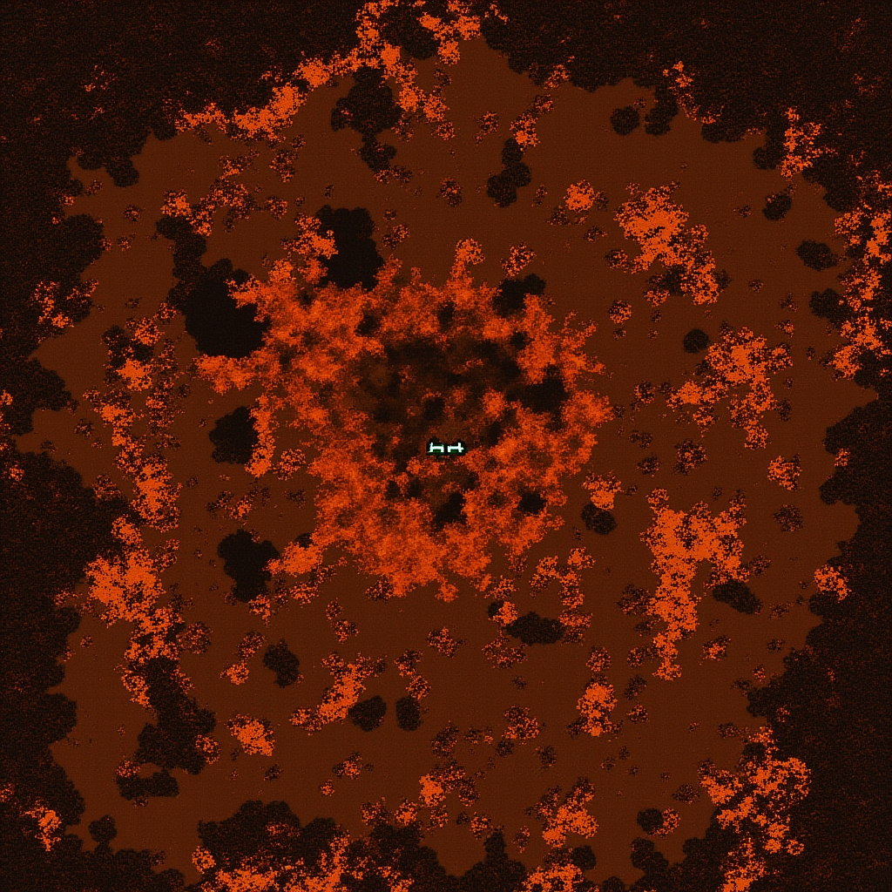

The phrase 2B2T world download attracts huge attention because it promises something rare: the ability to explore an absurdly old anarchy world offline at your own pace. When large public snapshots of the map circulate, especially the famous one-million-by-one-million style releases that made social news, they become valuable for more than nostalgia. A good 2B2T map download is a research tool for players, builders, historians, and archive hunters.
Here is the thing most guides skip — the real challenge is not what you think it is. It is the small stuff that compounds over time.
Before downloading anything, understand what you are getting. You are not grabbing a tidy adventure map. You are handling a massive chunk archive with broken terrain, missing context, and enough data to stress weak hardware. That is why the smartest approach starts with planning: check the source, estimate storage, choose a torrent client, and decide whether you want to explore directly in game or render the map in a separate viewer.
What the 1TB map actually is
Large 2B2T snapshots are usually broad chunk archives covering a giant area of the world rather than every possible coordinate ever generated. The famous scale often discussed by players is roughly one million by one million blocks around the center, though exact packaging, compression, and date range depend on the release. That distinction matters because people hear “1TB world map” and imagine the entire infinite world. In reality, it is a huge but still bounded archive of server history.
That archive contains more than landmarks. It also captures highways, terrain scars, temporary player routes, scattered stash evidence, and ruined biome edges. Even when famous bases are gone or damaged, the surrounding geography tells stories. This is why many players use offline maps to understand travel patterns rather than to hunt exact active coordinates. The world download becomes more valuable when you treat it as a historical document instead of a loot guarantee.
How torrent download works
Most major releases spread through torrent distribution because the file size is too large for ordinary direct hosting. A torrent client downloads pieces from multiple peers instead of relying on one overloaded server. For a 2B2T world download, this method is practical but slower than many beginners expect. Download speed depends on seed availability, your own network conditions, and how healthy the swarm still is months after the initial hype.
Choose a reputable torrent client, verify the magnet link or torrent file source, and make sure you have enough free disk space before you start. Do not aim the download at your main system drive if that drive is already tight. Interrupted downloads are common, so use a setup that can pause and resume safely. If the archive is split into parts, keep the folder structure exactly as released until you confirm how the files are meant to be unpacked.
Storage and hardware planning
The headline file size is only part of the story. If your map archive is compressed, you may need hundreds of gigabytes more for extraction. If you render tiles or create overview images, those outputs can also become massive. SSD storage improves load times, but a spacious HDD can still work for archiving if you are patient. Players who plan for only the compressed file usually end up moving data twice.
Exploring giant world downloads inside Minecraft demands memory, especially if you load heavy chunk areas or run shaders on top. Rendering tools also hit the CPU hard. You do not need a workstation to do useful research, but weak laptops may struggle with both in-game browsing and full
For reference, the official 2b2t.org server page has a detailed breakdown of the mechanics mentioned here.
map renders. If your hardware is modest, render in sections or rely on lighter viewer tools instead of trying to open everything at once.Rendering and map tools
After the archive is downloaded, you have two broad options. The first is to load the save in Minecraft and fly through it manually. This is immersive and good for studying the feel of highways, bases, or spawn destruction. The second is to use render tools that convert chunks into overhead map imagery. This is far better for pattern analysis, route planning, and seeing historical scars at scale.
Popular render workflows usually involve software that can read region files and generate stitched tiles or high-resolution map images. The exact tool changes with the era and community preference, but your evaluation criteria stay the same: can it handle huge worlds, can it export usable images, and can it let you zoom enough to compare landmarks with chunk logic? A simple overview map is often more useful than trying to brute-force a cinematic render of everything.
Best ways to use the archive
The smartest use of a 2B2T map download is contextual. Study spawn development. Compare highway geometry over time. Learn how far from central routes players tended to build. Search for patterns in terrain damage around famous locations. If you are a builder, use the archive for inspiration by seeing how scale, emptiness, and destruction interact in old 2B2T landscapes.
For active survival players, the world download is best used as a planning reference, not a promise. It can teach you how people moved and where regions became saturated with attention. It can also show why some coordinates are too obvious to trust. In the end, a large 2B2T world download rewards patient players with better map literacy. The people who get the most value from it are the ones who organize storage first, download carefully, render selectively, and read the terrain like a historical document.